5 ร้านอาหารในจังหวัดประจวบฯ ที่เด็ด!!
1.ร้านอาหารโกหมาก
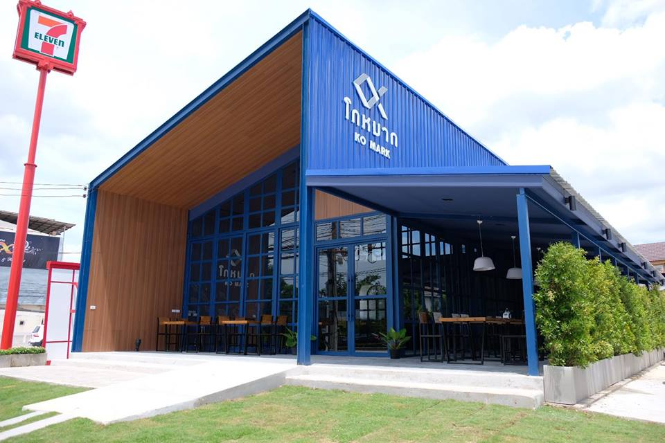
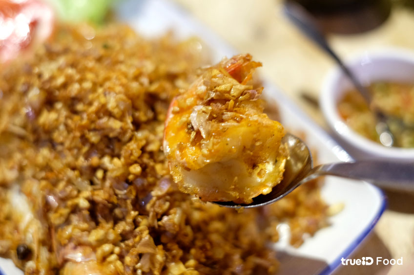
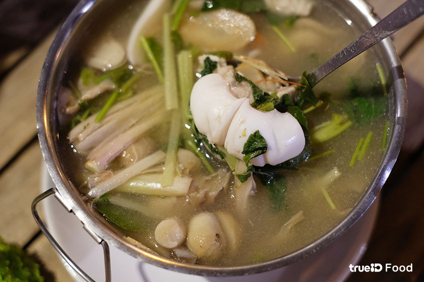
- พิกัด : https://maps.app.goo.gl/K7J8RBSvSxkWH8tM7
- ร้านเปิดบริการ : 11.00 - 16.00 และ 17.00 - 21.00 น.
- โทร : 03-290-7589
- เว็บไซต์ : https://www.facebook.com/Komarkhuahin/
2.ครัวเจ๊แมว ปากน้ำปราณ
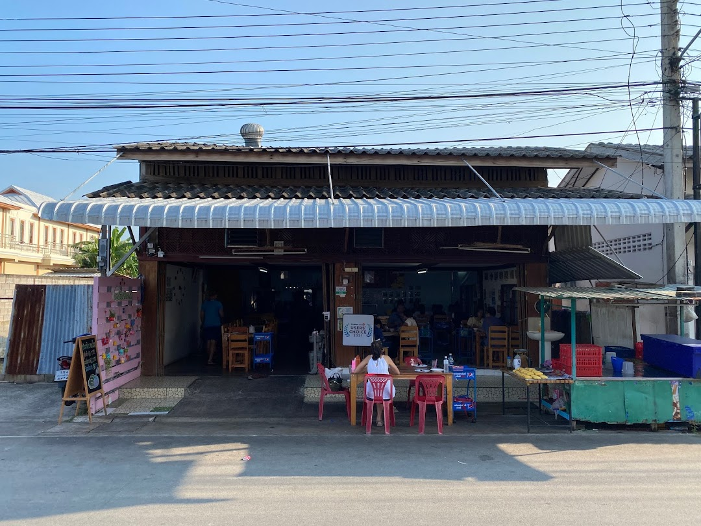
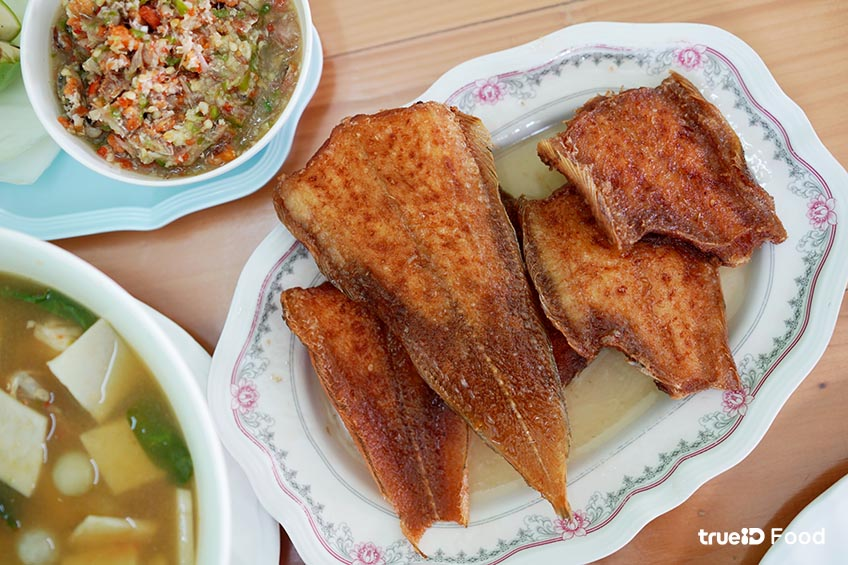
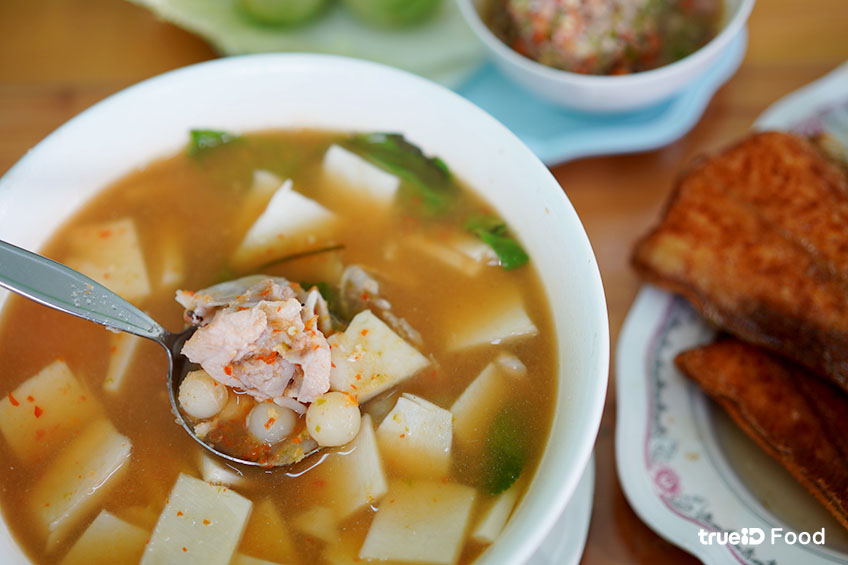
- พิกัด : https://goo.gl/maps/96MGYAmNsRVRnYNQ9
- ร้านเปิดบริการ : 10.00 - 20.00 น. (หยุดวันจันทร์)
- โทร : 08-6165-9510
- เว็บไซต์ : https://www.facebook.com/kruajemaew/
3.ร้านบ้านครูส่วน
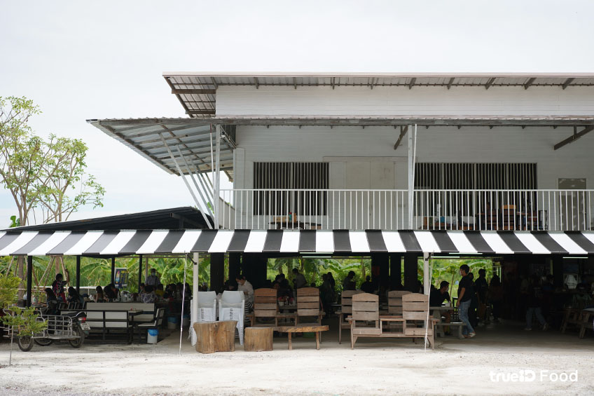
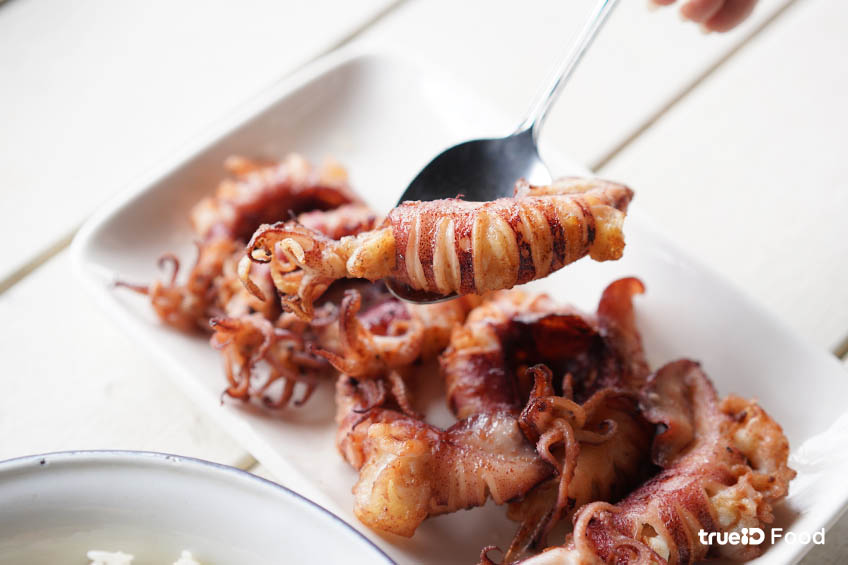
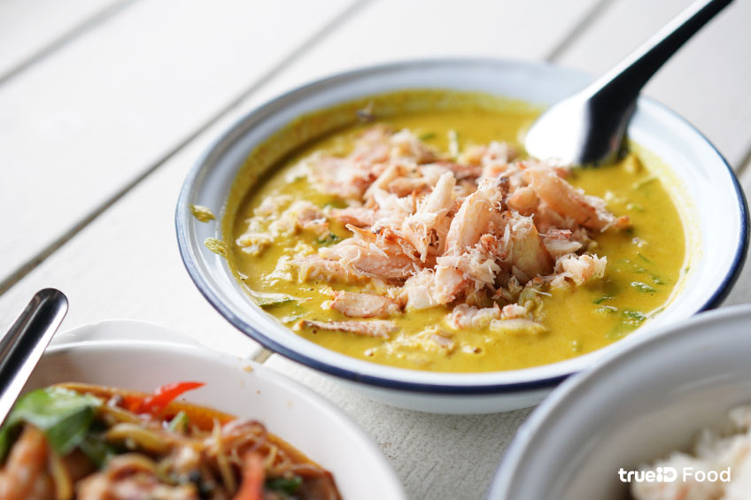
- พิกัด : https://goo.gl/maps/taZKhV77xDq19jN4A
- ร้านเปิดบริการ : 09.00 - 17.00 น. (หยุดวันอังคาร)
- โทร : 08-0193-6429
- เว็บไซต์ : https://www.facebook.com/bypla0801936429
4.ขนมถ้วยตะไล สูตรคุณยาย
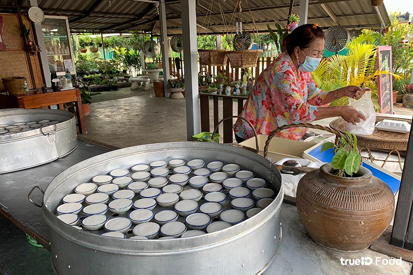
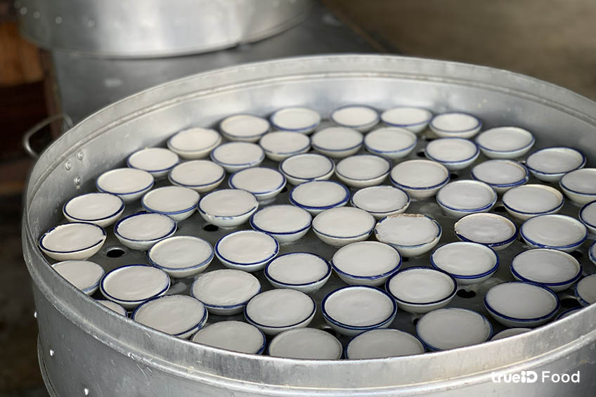
- พิกัด : https://goo.gl/maps/Z4NpZP9WAseUyfkc9
- ร้านเปิดบริการ : 04.00 - 15.00 น.
- โทร : 08-9741-7507
- เว็บไซต์ : https://www.facebook.com/bantanyong7507/
5.ร้านอาหารบ้านอิสระ
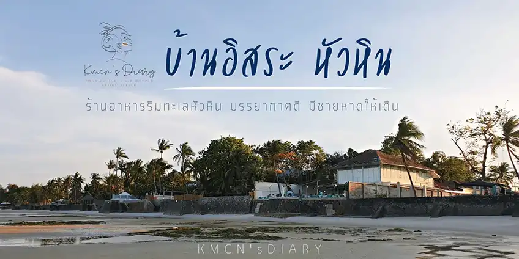
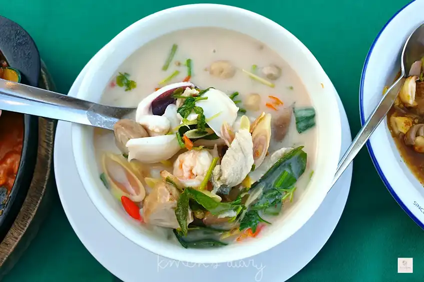

- พิกัด : https://goo.gl/maps/6rrrrA3r4iAiNJ1w7
- เปิดบริการ : 11.00 - 22.00 น.
- โทร : 08-1887-9229
- เว็บไซต์ : https://www.facebook.com/itsarahuahin/